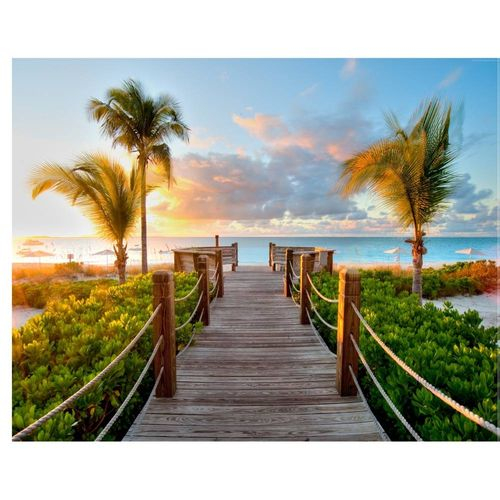

Vamos para Grécia?
Na Grécia que vamos conhecer...

Na Grécia antiga, as viagens marítimas pelo Mar Mediterrâneo favoreceu muito a economia grega, pois a infertilidade das planícies gregas tornou a produção agrícola insuficiente para atender a necessidade de consumo. O relevo impedia a produção adequada de alimentos, na mesma proporção da demanda.
Automóvel
O carro...

O automóvel foi o grande impulsionador das viagens privadas e para fins recreativos. A liberdade que trouxe às pessoas e a rapidez com que se passaram a cobrir as distâncias foi um dos grandes motivos para deslocações e troca de experiências e culturas. Mais tarde, o avião com bilhetes a preços acessíveis viria a facilitar ainda mais as viagens a uma escala global.
Por que viajar?
Uma viagem em curso...

Uma viagem pode ser realizada com fins recreativos, para visitar amigos ou família, para realizar negócios ou para trabalhar (diariamente fazendo o percurso).XXX.